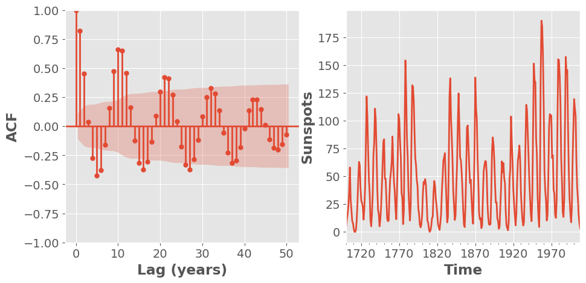
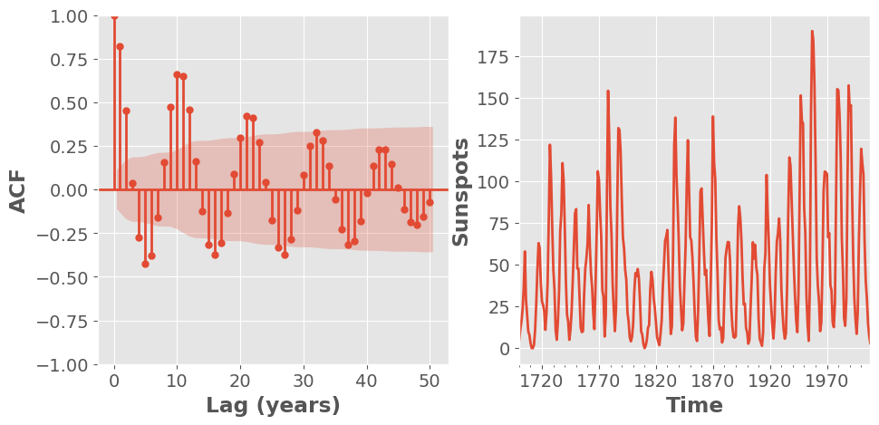
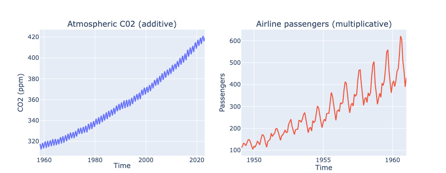
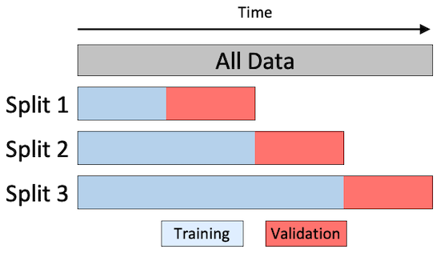

574 Quiz 1
Time Series
- Collection of observations made sequentially in time
- Data Types:
- Univariate: Single observation at each time point (e.g. bike sale over time)
- Multivariate: Multiple observations at each time point (e.g. bike sale + profit over time)
- Heirarchical: Multiple time series, each with a hierarchical structure (e.g. bike sale + profit for each store over time)
- Common Tasks:
- Prediction/ Forecasting (Supervised Learning)
- Difficult since many factors
- Clustering/ Anomaly Detection (Unsupervised Learning)
- Prediction/ Forecasting (Supervised Learning)
Features of Time Series
Temporal Dependence
- Observations close in time are often correlated
- Can quanitify using autocorrelation
- Autocorrelation: Correlation of a time series with a lagged version of itself
- Lag: Time difference between two observations
- ACF: Autocorrelation function
- Plots autocorrelation for different lags
- PACF: Partial autocorrelation function
- Plots correlation between two observations after removing the effect of other lags
- e.g.
data[t (lag=1)] = data[t].shift(t)
Correlogram
- Plot of ACF vs. lag
- Helps identify patterns in time series
- Use
statsmodels.graphics.tsaplots.plot_acf()
 

Shading indicates if correlation is significantly different from 0
- \(CI = \pm z_{\alpha/2} SE(r_k)\), \(z_{\alpha/2} \approx 1.96\) for 95% CI
- \(SE(r_k) = \frac{1}{\sqrt{T}}\), where \(T\) is the number of observations - Or Bartlett’s formula: \(SE(r_k) = \sqrt{\frac{1 + 2\sum_{j=1}^{k-1}r_j^2}{T}}\)
CO2 plot has a trend so ACF for smaller lags tend to be higher
General Key Observations:
- ACF almost always decays with lag
- If a series alternates (oscillates about mean), ACF will alternates too
- If a series has seasonal or cyclical fluctuations, the ACF will oscillate at the same frequency
- If there is a trend, ACF will decay slower (due to high correlation of the consecutive observations)
- Experience is required to interpret ACF
Time Series Patterns
- Trend: Long-term increase/ decrease
- Seasonality: Regular pattern of up and down fluctuations (fixed interval)
- typically over smaller time frame
- Cyclic: Fluctuations not of fixed period (unknown and changing interval)
- typically over larger time frame
White Noise
Time series with: 0 mean, constant variance, no autocorrelation
Further assumed that it is iid and gaussian: \(N(0, \sigma^2)\)
Why do we care?
- Cannot predict white noise
- If residuals from time series for a forecast should resemble white noise
- Implies that the model has captured all the information in the data
Time Series Decomposition
When we decompose, we split the time series into 3 components:
- Trend-cycle (T): Long-term increase/ decrease
- Seasonal (S): same as seasonal above
- Residual: Random fluctuations

- Additive Model: \(Y_t = T_t + S_t + R_t\)
- When the magnitude of the seasonal fluctuations does not change with the level of the time series
- Multiplicative Model: \(Y_t = T_t \times S_t \times R_t\)
- When the magnitude of the seasonal fluctuations does change with the level of the time series
Estimating the Trend
Curve Fitting: Fit a polynomial of degree \(n\) to the time series
detrended = data - detrend(data, order=2) # order=2 for quadraticMoving Average: Smooths out short-term fluctuations and highlights longer-term trends
# rolling is a pandas function rolling_mean = df.rolling(window=5, center=True).mean() # For even window, common practice to do: window = 4 df.rolling(window).mean().rolling(2).mean().shift(-window//2)window: Number of observations used for calculating the statisticcenter: Set the labels at the center of the window- if odd, the label is at the center
- if even, the label is at the right
Estimating Seasonality
- Simple steps:
- Remove the trend from the data (the detrended data above)
- Estimate the seasonal component by averaging the detrended data over each season
Estimating the Residual
- The residual is the remainder after removing the trend and seasonal components
- If additive model: \(R_t = Y_t - T_t - S_t\)
- If multiplicative model: \(R_t = \frac{Y_t}{T_t \times S_t}\)
- Use
seasonal_decomposefromstatsmodels.tsa.seasonalto do all of this
Forecasting
- Average: Use average of all past observations
- Naive: Use the last observation as the forecast
- Seasonally Adjusted Naive: Same as Naive but with seasonally adjusted data (classical decomposition)
- Seasonally Naive: Use the last observation from the same season (only one with seasonality)
- Drift: Linearly extrapolate the trend (only one that is not a straight horizontal line)
Exponential Models
Simple Exponential Smoothing
- Forecast is a weighted average of all past observations
- Recursively defined: \(\hat{y}_{t+1|t} = \alpha y_t + (1 - \alpha) \hat{y}_{t|t-1}\)
- \(\alpha\): Smoothing parameter
- Close to 0: More weight to past observations
- Close to 1: More weight to current observation (closer to Naive forecast)
- Initial Forecast:
- \(\hat{y}_{1|0} = y_1\)
- Heuristic: linear interpolation of the first few observations
- Learn it by optimizing SSE
- Forecasts are flat
Holt’s Method
Extend SES to include a trend component \[\hat{y}_{t+h|t} = \ell_t + h b_t\]
\[\ell_t = \alpha y_t + (1 - \alpha)(\ell_{t-1} + b_{t-1})\]
\[b_t = \beta(\ell_t - \ell_{t-1}) + (1 - \beta)b_{t-1}\]
\(\ell_t\): Level
\(b_t\): Smoothness of the trend
- Close to 0: Trend is more linear
- Close to 1: Trend changes with each observation
\(\alpha\): Smoothing parameter for level
Holt’s Winter Method
Extend Holt’s method to include a seasonal component \[\hat{y}_{t+h|t} = \ell_t + h b_t + s_{t-m+h_m}\]
\[b_t = \beta(\ell_t - \ell_{t-1}) + (1 - \beta)b_{t-1}\]
For Additive Seasonal: \[\ell_t = \alpha(y_t - s_{t-m}) + (1 - \alpha)(\ell_{t-1} + b_{t-1})\]
\[s_t = \gamma(y_t - \ell_{t-1} - b_{t-1}) + (1 - \gamma)s_{t-m}\]
For Multiplicative Seasonal: \[\ell_t = \alpha\frac{y_t}{s_{t-m}} + (1 - \alpha)(\ell_{t-1} + b_{t-1})\]
\[s_t = \gamma\frac{y_t}{\ell_{t-1} + b_{t-1}} + (1 - \gamma)s_{t-m}\]
| Trend component | Seasonal Component |
|---|---|
None (N) |
None (N) |
Additive (A) |
Additive (A) |
Additive Damped (Ad) |
Multiplicative (M) |
- Simple Exponential Smoothing
(N,N) - Holt’s Method
(A,N) - Holt’s Winter Method
(A,A)
ETS (Error, Trend, Seasonal) Models
Components:
- Error:
{A, M} - Trend:
{N, A, Ad} - Seasonal:
{N, A, M}
- Error:
Can generate prediction intervals (confidence intervals):
model.get_prediction()(analytical)model.simulate()
Selecting a Model
- Metrics, Commonly used:
- AIC, BIC
- SSE/ MSE/ RMSE
- Residuals:
- Visual inspection (should be uncorrelated, zero mean, normally distributed)
- Running diagnostic Portmanteau tests:
- Ljung-Box Test: \(H_0\): Residuals are uncorrelated (white noise)
- p-value < 0.05: Reject \(H_0\) (bad)
- Jarque-Bera Test: \(H_0\): Residuals are normally distributed
- p-value < 0.05: Reject \(H_0\) (bad)
- Ljung-Box Test: \(H_0\): Residuals are uncorrelated (white noise)
- Out-of-sample Forecasting:
- Split data into training and testing
- Fit model on training data
- Forecast on testing data
- Compare forecast with actuals
ARIMA Models
- ARIMA: AutoRegressive Integrated Moving Average
- Commonly used for time series forecasting (other than exponential smoothing)
- Based on autocorrelation of data
- Do not model trend nor seasonality, so it is typically constrained to stationary data
Stationarity
- Statistical properties of a time series do not change over time
- Mean, variance is constant
- Is roughly horizontal (no strong trend)
- Does not show predictable patterns (no seasonality)
- DOES not mean that the time series is constant, just that the way it changes is constant
- It is one way of modelling dependence structure
- Can only be independent in one way but dependent in many ways
Strong vs Weak Stationarity
| Property | Strong Stationarity | Weak Stationarity |
|---|---|---|
| Mean, Variance, Autocovariance | Constant | Constant |
| Higher order moments (skewness, kurtosis) | Constant | Not necessarily constant |
- Weak stationarity is often sufficient for time series analysis
Checking for Stationarity
- Visual Inspection: Plot the time series
- Look for trends, seasonality, and variance (none of these should be present)
- Make a correlogram plot (ACF plot should rapidly decay to 0)
- Summary Statistics: Calculate mean, variance, and autocovariance
- Mean and variance should be roughly constant over time
- Hypothesis Testing: Use statistical tests
- Augmented Dickey-Fuller (ADF) test/ AdFuller
- Null hypothesis: Time series is non-stationary
- small p: it is stationary (reject null)
- Use
statsmodels.tsa.stattools.adfuller
- Kwiatkowski-Phillips-Schmidt-Shin (KPSS) test
- Null hypothesis: Time series is stationary
- small p: it is non-stationary (reject null)
- Augmented Dickey-Fuller (ADF) test/ AdFuller
Making a Time Series Stationary
Stabilizing the variance using transformations
- Log or box-cox transformation
\[w_t = \begin{cases} \frac{y_t^\lambda - 1}{\lambda} & \text{if } \lambda \neq 0 \\ \ln(y_t) & \text{if } \lambda = 0 \end{cases}\]
Stabilize the mean using differencing
- First difference: \(y' = y_t - y_{t-1}\)
- Second difference: \(y'' = y' - y'_{t-1} = y_t - 2y_{t-1} + y_{t-2}\)
- Seasonal difference: \(y' = y_t - y_{t-m}\), where \(m\) is the seasonal period
AR and MA Models
| AR (AutoRegressive) Model | MA (Moving Average) Model |
|---|---|
| Regression of the time series on its own lagged values | Regression of the time series on past forecast errors |
| \(y_t = \phi_1 y_{t-1} + \phi_2 y_{t-2} + \ldots + \phi_p y_{t-p} + \epsilon_t\) | \(y_t = \epsilon_t + \theta_1 \epsilon_{t-1} + \theta_2 \epsilon_{t-2} + \ldots + \theta_q \epsilon_{t-q}\) |
| \(p\): order of the AR model | \(q\): order of the MA model |
| \(\phi\): AR coefficients | \(\theta\): MA coefficients |
| \(\epsilon_t\): white noise | \(\epsilon_t\): white noise |
| Long memory model: \(y_1\) has a direct effect on \(y_t\) for all \(t\) | Short memory model: \(y_t\) is only affected by recent values of \(\epsilon\) |
| Good for modeling time-series with dependency on past values | Good for modeling time-series with a lot of volatility and noise |
| Less sensitive to choice of lag or window size | More sensitive to choice of lag or window size |
- Both values are between -1 and 1
- AR value of 1 means that the time series is a random walk
ARMA Model
- ARMA: AutoRegressive Moving Average
- Combines AR and MA models
- Key Idea: Parsimony
- fit a simpler, mixed model with fewer parameters, than either a pure AR or a pure MA model
\[y_t = c + \phi_1 y_{t-1} + \phi_2 y_{t-2} + \ldots + \phi_p y_{t-p} + \epsilon_t + \theta_1 \epsilon_{t-1} + \theta_2 \epsilon_{t-2} + \ldots + \theta_q \epsilon_{t-q}\]
- \(\phi\): AR coefficients, \(\theta\): MA coefficients
- Usually write it as
ARMA(p, q)
ARIMA Model
- ARIMA: AutoRegressive Integrated Moving Average
- Combines ARMA with differencing
ARIMA(p, d, q)p: order of the AR modeld: degree of differencingq: order of the MA model
- Use
statsmodels.tsa.arima.model.ARIMA - Hyperparameter tune using
pmdarima.auto_arima
SARIMA
SARIMA: Seasonal ARIMA
SARIMA(p, d, q)(P, D, Q, m)p,d,q: ARIMA parametersP,D,Q: Seasonal ARIMA parametersm: seasonal period
E.g. In a dataset with years and 12 months
- \(p=2\) means Jan is affected by Dec and Nov
- \(P=2\) means Jan is affected by Jan of the previous 2 years
Also have SARIMAX (with exogenous variables)
- adds exogenous variables (other time series) to the model
- Not the most effective model
Choosing Orders
- ACF and PACF plots
- ACF: Autocorrelation Function
- PACF: Partial Autocorrelation Function
- Use these to determine the order of the AR and MA models
| ACF Plot | PACF Plot |
|---|---|
| Measures correlation between an observation and its lagged values | same but removes intermediate correlations (kinda isolates the direct effect) |
| For MA(q), cuts off after lag q | For AR(p), cuts off after lag p |
| Else, tails off (exp or like damped sin) | Else, tails off (no clear pattern) |
- See the cutoff when the peaks are lower than the shaded region
Time Series Forecasting in ML
Key Differences vs. Traditional ML
| Traditional ML | Time Series ML |
|---|---|
| Data is IID | Data is ordered |
| CV is random | Use sliding window CV |
| Use feature engineering | Use lags, rolling windows, etc. |
| Predict new data | Predict future (specify horizon) |
sktime Library
- Load Data
- Feature Engineering: shift/ lag
- Train-Test Split
- Use
sktime.split.temporal_train_test_splitorsklearn.model_selection.train_test_splitbut withshuffle=False
- Use
- CV with time series
- Expanding Window: start with small training set and increase it 
- Fixed/sliding Window: use a fixed window size

- Model Fitting
- Forecasting
Forecasting Strategies
- One-step forecasting: one step ahead
- Multi-step forecasting: multiple steps ahead
- Recursive strategy: predict
t, then it becomes part of the input fort+1 - Direct strategy: have a model for each step (model for
t+1, another fort+2, etc) - Hybrid strategy: is dumb and bad
- Multi-output strategy: 2 different series (e.g. temperature and humidity)
- Recursive strategy: predict
- Use
make_reduction:make_reduction(regressor, window_length=12, strategy="recursive")
Feature Preprocessing and Engineering
Preprocessing
- Coerce to stationary (via diff or transforms)
- Smoothing (e.g. moving average)
- Impute missing value (e.g. linear interpolation)
- Removing outliers
Feature Engineering
- Lagging features/ responses
- Adding time stamps (e.g. day of week, month, etc) 3, Rolling Statistics (e.g. rolling mean, rolling std)
Multivariate Time Series
- Means time series with multiple variables (e.g. temperature and humidity)